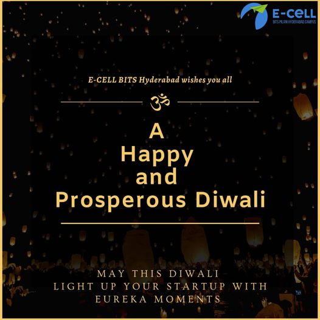

E-Cell, BITS Pilani-Hyderabad Campus Chapter
The light from the pious lamp ‘Diya’ fights the surroundings obscurity. Though it is so little yet, it burns and gives light and brightens its surrounding. This is very similar to entrepreneurship, where a bunch of entrepreneurs work on an ideology to come up with a solution around an issue or improve the lifestyle of the public. Though entrepreneurship is easier said than done, they face a lot of issues logistically and logically. But all bad things end eventually and hard work is ‘Diya’ to their darkness.
On this auspicious occasion of Diwali, we the family of Ecell wish you a thrilled, safe and healthy Diwali.
#HappyDiwali
#Supporting
#VocalForLocal
#Lightupyouridea

How do I associate myself with entrepreneurship?
I associate myself with entrepreneurship because I have always known that I can only be passionate for something that is of my own and that I have created. I don't want a 9-5 ordinary life and a decent salary, I want to build a company and work hard to make it successful. I am a good leader and have proved it many times. I don't fear taking risks and exploring out new ideas.
I always bounce back after failures without losing heart. I believe I have all the qualities required to be an entrepreneur.